РИМСЬКА ІМПЕРІЯ (СТАРОДАВНІЙ РИМ) – ВІД РЕСПУБЛІКИ ДО ІМПЕРІЇ
- Територія імперії
- Зародження
- Рання історія – Римська республіка
- Війни
- Криза та падіння республіки
- Початок імперії
- Падіння імперії
- Культура
- Мистецтво
- Релігія
- Роль християнства
Значення великої Римської імперії, що колись простягалася на чималих територіях від туманної Англії до спекотної Сирії в контексті загальносвітової історії надзвичайно велике. Можна навіть сказати, що саме Римська імперія була предтечею загальноєвропейської цивілізації, багато в чому сформувавши її вигляд, культуру, науку, право (юриспруденція середньовіччя ґрунтувалася на римському праві), мистецтво, освіту. І в нашій сьогоднішній мандрівці у часі ми з вами вирушимо у древній Рим, вічне місто, що стало центром самої грандіозної імперії в історії людства.
Територія імперії
В епоху своєї найвищої могутності кордони Римської імперії простягалися від територій сучасної Англії та Іспанії на Заході і до територій сучасних Ірану, Сирії на Сході. На півдні ж під п’ятою Риму перебувала вся Північна Африка.
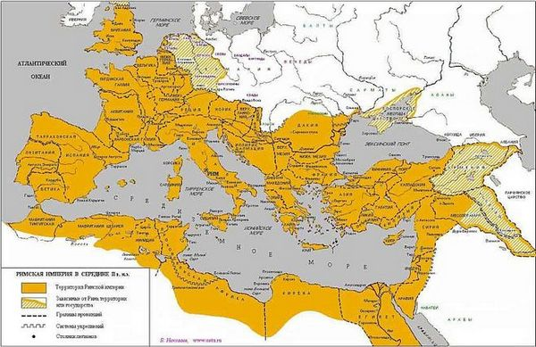Зрозуміло, межі Римської імперії були не постійними і після того, як Сонце римської цивілізації стало йти до заходу, а сама імперія приходити в занепад, зменшувалися і її межі.
Зародження
Але з чого все починалося, як виникла Римська імперія? Перші поселення на місці майбутнього Риму з’явилися ще в І тисячолітті до н. е.. Згідно з легендою, римляни ведуть свій родовід від троянських біженців, які після руйнування Трої і тривалих поневірянь, оселилися в долині річки Тібр, все це гарно описано талановитим римським поетом Вергілієм в епічній поемі «Енеїда». А трохи пізніше два брати Ромул і Рем, нащадки Енея заснували легендарне місто – Рим. Проте історична достовірність подій «Енеїди» під великим питанням, іншими словами швидше за все це просто красива легенда, що має, однак і практичний сенс – надати римлянам героїчне походження. Тим більше, враховуючи, що сам Вергілій, по суті, був придворним поетом римського імператора Октавіана Августа, і своєю «Енеїдою» виконував своєрідне політичне замовлення імператора.
Що ж стосується реальної історії Рим був, швидше за все, дійсно заснований якимось Ромулом і його братом Ремом, от тільки навряд чи вони були синами весталки (жриці) і бога війни Марса (як розповідає легенда), швидше синами якогось місцевого вождя. Та в момент заснування міста між братами спалахнула суперечка в ході якої Ромул вбив Рема. Та знову таки, де легенда і міф, а де реальна історія важко розібрати, але як би там не було, стародавній Рим був заснований у 753 році до н. е. За своїм політичним устроєм рання римська держава багато в чому була схожа на давньогрецькі міста-поліси. Спершу на чолі стародавнього Риму стояли царі, проте під час правління царя Тарквінія Гордого відбулося загальне повстання, царська влада була скинута, а сам Рим перетворився в аристократичну республіку.
Рання історія – Римська республіка
Напевно багато фанатів наукової фантастики помітять схожість Римської республіки, яка згодом трансформувалася в Римську імперію з такими багатьма улюбленими «Зоряними війнами», де також галактична республіка перетворилася в галактичну імперію. По суті, творці «Зоряних воєн» запозичили свою вигадану галактичну республіку/імперію з реальної історії самої що не є справжньої Римської імперії.
Устрій Римської республіки як ми відзначили раніше, був схожий з грецькими містами-полісами, але був і ряд відмінностей: так все населення стародавнього Риму поділялося на дві великі групи:
- патриціїв, римських аристократів, що займали чільне становище,
- плебеїв, що складалися з пересічних громадян.
Головний законодавчий орган Римської республіки – сенат, складався виключно з багатих і шляхетних патриціїв. Плебеєм далеко не завжди подобалося таке положення справ, і кілька разів молоду Римську республіку стрясали плебейські повстання, з вимогами розширення прав плебеїв. З самого початку своєї історії молода Римська республіка була змушена боротися за місце під Сонцем з сусідніми італьськими племенами. Переможені були змушені підкорятися волі Риму або на правах союзників або повністю входячи до складу давньоримської держави. Часто підкорене населення не отримувало прав римських громадян, а часом і зовсім зверталося на рабів.
Найбільш небезпечними супротивниками стародавнього Риму були етруски і самніти, а також деякі грецькі колонії на півдні Італії. Незважаючи на спочатку деякі ворожі відносини з давніми греками римляни згодом практично повністю запозичили їх культуру та релігію. Навіть грецьких богів римляни взяли собі, правда переінакшили на свій лад, зробивши Зевса Юпітером, Ареса Марсом, Гермеса Меркурієм, Афродіту Венерою і так далі.
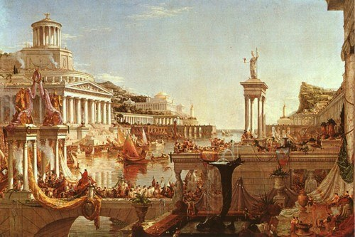Війни
Хоча правильніше було б назвати цей підпункт «війни римської республіки», яка хоча і воювала з самого початку своєї історії, але окрім дрібних сутичок з сусідніми племенами траплялися і дійсно великі війни, що стрясали тодішній античний світ. Першою дійсно великою війною Риму було зіткнення з грецькими колоніями. В ту війну втрутився грецький цар Пірр, якому хоч і вдалося перемогти римлян, тим не менш, його власна армія зазнала величезних і непоправних втрати. З тих часів вислів «Піррова перемога» став прозивним, що означає перемогу занадто великою ціною, перемогу практично рівну поразці. Потім продовжуючи війни з грецькими колоніями, римляни зіткнулися на Сицилії з ще однією великою державою – Карфагеном, колишньою фінікійською колонією. Протягом довгих років Карфаген став головним суперником Риму, суперництво ж їх вилилося в три пунічні війни, в яких Рим здобув перемогу. Перша пунічна війна велася за острів Сицилію, після перемоги римлян в морській битві біля Егатських островів, в ході якої римляни наголову розбили карфагенський флот, вся Сицилія стала частиною римської держави.
Прагнучи взяти у римлян реванш за поразку в першій пунічній війні, талановитий карфагенський полководець Ганнібал Барка в ході другої пунічної війни спочатку висадився на іспанському узбережжі, потім разом з союзними іберійськими та галльськими племенами здійснив легендарний перехід через Альпи, вторгшись вже на територію безпосередньо римської держави. Там він завдав ряд нищівних поразок римлянам, особливо відчутною була битва біля Канн. Доля Риму повисла на волосині, але Ганнібалові таки не вдалося довершити почате. Взяти сильно укріплене місто Ганнібал не зміг, і був змушений покинути Апенінський півострів. З тих пір військова вдача зрадила карфагенянам, римські війська під командуванням не менш талановитого полководця Сципіона Африканського завдали нищівної поразки армії Ганнібала. Друга пунічна війна знову була виграна Римом, який після перемоги в ній перетворився на справжнісіньку наддержаву стародавнього світу.
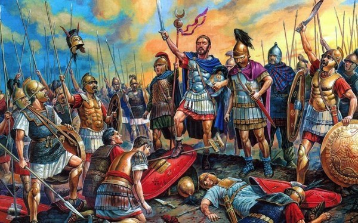Та третя пунічна війна вже являла собою остаточне знищення поваленого Карфагена всесильним Римом.
Криза і падіння республіки
Завоювавши великі території, здобувши перемогу над противниками, Римська республіка поступово накопичувала в своїх руках все більшу владу і багатство, поки сама не ступила в період смут і кризи, викликаної кількома причинами. В результаті переможних воєн Риму все більше і більше рабів вливалося в країну, вільні плебеї і селяни не могли конкурувати з новою масою рабів, зростало їх загальне невдоволення. Народні трибуни, брати Тіберій і Гай Гракхи спробували вирішити проблему, провівши реформу землекористування, яка б з одного боку обмежила володіння багатих римлян, а надлишки їх земель дозволяла розподілити серед бідних плебеїв. Однак їх ініціатива наштовхнулася на опір консервативних кіл Сенату, в результаті Тіберій Гракх був убитий політичними супротивниками, його брат Гай покінчив життя самогубством.
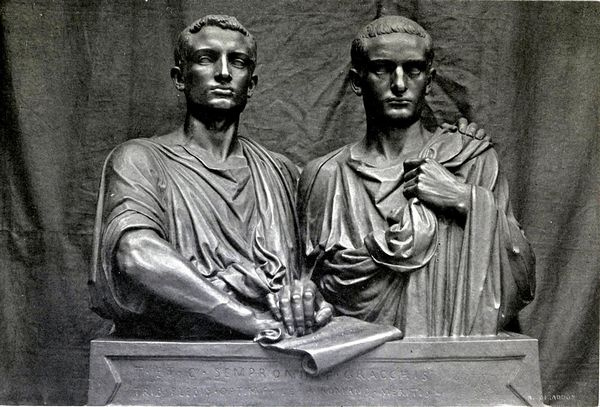Все це привело до початку громадянської війни в Римі, патриції і плебеї зіткнулися між собою. Порядок вдалося відновити Луцію Корнелію Суллі, ще одному видатному римському полководцю, який перед тим переміг війська понтійського царя Мітрідіада Євпатора. Для наведення порядку Сулла встановив у Римі справжню диктатуру, безжально розправляючись з неугодними і незгодними громадянами з допомогою своїх проскрипційних списків. (Проскрипція – у стародавньому Римі означало знаходження поза законом, громадянин, який потрапив у проскрипційний список Сулли, підлягав негайному знищенню, а його майно конфіскації, за переховування «громадянина поза законом» – також страта та конфіскація майна).
По суті це був вже кінець, агонія Римської республіки. Остаточно ж її розвалив і перетворив в імперію молодий і амбітний римський полководець Гай Юлій Цезар. В молодості Цезар ледь не загинув під час терору Сулли, лише заступництво впливових родичів переконало Суллу не включати Цезаря у проскрипційні списки. Після низки переможних війн в Галії (сучасній Франції) і підкорення галльських племен авторитет Цезаря, переможця галлів виріс образно кажучи «до небес». Та ось він вже вступає в сутичку зі своїм політичним супротивником і колись союзником Помпеєм, віддані йому війська переходять Рубікон (невелику річку в Італії) і йдуть на Рим. «Жереб кинуто», легендарна фраза Цезаря, що означала його намір захопити владу в Римі. Так впала Римська республіка, і почалася Римська імперія.
Початок імперії
Початок Римської імперії йде через низку громадянських воєн, спочатку Цезар перемагає свого супротивника Помпея, потім він сам гине під ножами змовників, серед яких і його друг Брут. («І ти Брут?!», – останні слова Цезаря).
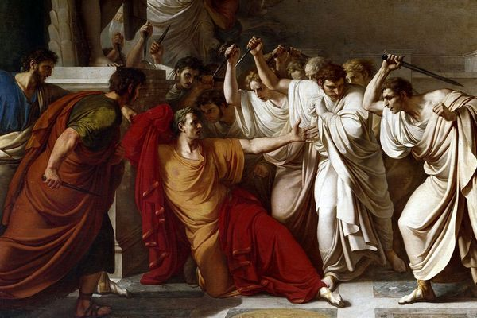Вбивство Цезаря поклало початок нової громадянської війни між прихильниками відновлення республіки з одного боку і прихильниками Цезаря Октавіаном Августом та Марком Антонієм з іншого. Здобувши перемогу над змовниками-республіканцями Октавіан і Антоній вже вступають в нову боротьбу за владу між собою і знову починається громадянська війна. Хоча Антонія підтримує єгипетська царівна, красуня Клеопатра (до речі колишня коханка Цезаря), він зазнає нищівної поразки, і Октавіан Август стає новим імператором Римської імперії. З цього моменту починається високий імперський період історії римської імперії, імператори змінюють один одного, змінюються і імператорські династії, сама ж Римська імперія веде постійні завойовницькі війни і досягає вершини своєї могутності.
Падіння імперії
На жаль, ми не можемо описати діяльність всіх римських імператорів і всі перипетії їхнього правління, інакше наша стаття сильно ризикувала б стати неосяжною. Зазначимо лише, що після смерті видатного римського імператора Марка Аврелія, імператора-філософа сама імперія стала хилитися до занепаду. На римському троні запанувала ціла низка так званих «солдатських імператорів», колишніх полководців, які спираючись на свій авторитет у військах, узурпували владу. У самій імперії спостерігалося падіння моралі, активно проходила свого роду варваризація римського суспільства – все більше варварів проникали і в римську армію і займали важливі державні посади в римській державі. Відбулася також демографічна і економічна кризи, все це повільно вело до загибелі колись могутньої римської держави.
При імператорі Діоклетіані відбувся поділ Римської імперії на Західну і Східну. Як ми знаємо, Східна римська імперія з часом трансформувалася у Візантію. Західна римська імперія так і не змогла пережити стрімке нашестя варварів, а боротьба з лютими кочівниками гунами, які прийшли зі східних степів, остаточно підірвала міць Риму. Незабаром Рим був розграбований варварськими племенами вандалами, чиє ім’я стало прозивним, за ті безглузді руйнування, які вандали завдали «вічному місту».
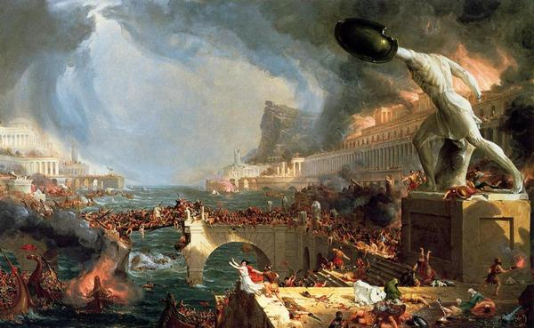Причини падіння Римської імперії:
- Зовнішні вороги, це, мабуть, одна з головних причин, якщо б не «велике переселення народів» і потужний варварський натиск Римська імперія цілком могла б проіснувати ще кілька століть.
- Відсутність сильного лідера: останній талановитий римський генерал Аецій, який зупинив просування гунів, який отримав перемогу в битві на Каталунських полях був підступно вбитий римським імператором Валентініаном ІІІ, який побоювався суперництва з боку видатного генерала. Сам імператор Валентиніан був людиною вельми сумнівних моральних якостей, зрозуміло, з таким «лідером» доля Риму була вирішена.
- Варваризація, по суті, на момент падіння західної Римської імперії варвари вже її поневолили зсередини, так як багато державних посад були зайняті саме ними.
- Економічна криза, яка в пізній Римській імперії була викликана глобальною кризою рабовласницького ладу. Раби більше не бажали покірно працювати від зорі до зорі на благо господаря, то тут, то там спалахували повстання рабів, це вело і до військових витрат, і до подорожчання предметів сільського господарства і загального занепаду економіки.
- Демографічна криза, однією з великих проблем Римської імперії стала висока дитяча смертність та маленька народжуваність.
Культура
Культура Римської імперії є важливою й істотною частиною загальносвітової культури, її невід’ємною частиною. Багатьма її плодами ми користуємося і по цей день, наприклад, каналізація, водопровід, прийшли до нас із стародавнього Риму. Саме римляни перші винайшли бетон і активно розвинули містобудівне мистецтво. Вся європейська кам’яна архітектура бере свій початок в стародавньому Римі. Саме римляни першими почали будувати кам’яні багатоповерхові будинки (так звані інсули), що досягали деколи до 5-6 поверхів (правда, перші ліфти винайшли лише через 20 століть).
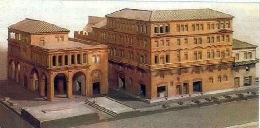Також архітектура християнських церков трохи більше ніж повністю запозичена з архітектури римської базиліки – місць для громадських зібрань стародавніх римлян. У сфері європейської юриспруденції на віки зайняло панування римське право – кодекс законів, що сформувався ще за часів Римської республіки. Римське право було правовою системою, як Римської імперії, так і Візантії, так і багатьох інших середньовічних держав заснованих на уламках Римської імперії вже в епоху середньовіччя. Латинська мова Римської імперії ще на протязі всього середньовіччя буде мовою науковців, викладачів і студентів.
Саме місто Рим перетворилося на найбільший культурний, економічний і політичний центр стародавнього світу, адже недаремно ходило прислів’я «всі дороги ведуть в Рим». У Рим стікалися товари, люди, звичаї, традиції, ідеї зі всієї тодішньої ойкумени (відомої частини світу). Навіть шовк з далекого Китаю через купецькі каравани потрапляв до багатих римлян. Зрозуміло, не всі забави стародавніх римлян будуть прийнятні в наш час. Ті ж гладіаторські бої, які проводилися на арені Колізею під багатотисячні овації римського натовпу, користувалися великою популярністю римлян. Цікаво, що освічений імператор Марк Аврелій навіть на деякий час повністю заборонив гладіаторські бої, однак після його смерті бої гладіаторів відновилися з колишньою силою.
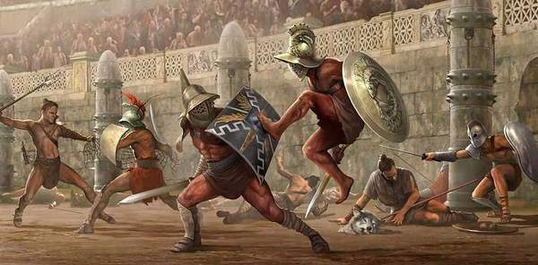Великою любов’ю простих римлян також користувалися гонки на колісницях, які були дуже небезпечними і нерідко супроводжувалися загибеллю невдалих візничих. Великий розвиток у стародавньому Римі мав театр, більш того, один з римських імператорів, Нерон мав дуже сильну пристрасть до театрального мистецтва, що сам нерідко грав на сцені, декламував вірші. Причому за описом римського історика Светонія робив це він не дуже вміло, так що спеціальні люди навіть стежили за глядачами, щоб ті не в якому разі не спали і не покидали театр під час виступу імператора.
Багаті патриції навчали своїх дітей грамоті та різним наукам (риториці, граматиці, математиці, ораторському мистецтву) або зі спеціальними вчителями (часто в ролі вчителя міг бути і якийсь освічений раб) або ж у спеціальних школах. Римська чернь, бідні плебеї, були, як правило, неписьменними.
Мистецтво
До нас дійшло багато чудових творів мистецтва, створених талановитими римськими художниками, скульпторами, архітекторами.
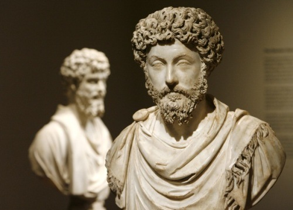Видатної майстерності римляни досягли в мистецтві скульптури, чому не мало сприяв так званий римський «культ імператорів», згідно з яким римські імператори були намісниками богів, і просто необхідно було на кожного імператора зробити першокласну скульптуру. На століття увійшли в історію мистецтва і римські фрески, багато з яких мають явно еротичний характер, як наприклад це зображення закоханих.
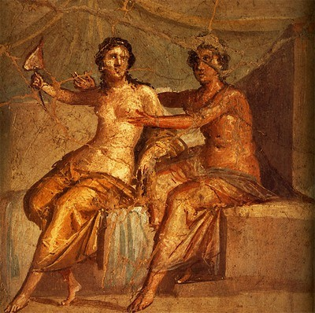Багато творів мистецтва Римської імперії дійшли до нас у вигляді грандіозних архітектурних споруд, таких як Колізей, вілла імператора Адріана, тощо.
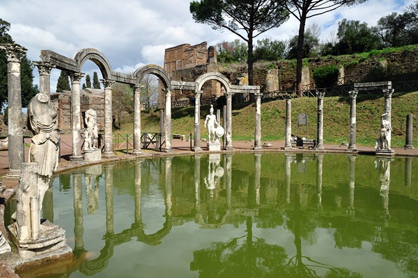Релігія
Державну релігію Римської імперії можна поділити на два періоди, язичницький та християнський. Тобто спочатку римляни запозичили язичницьку релігію стародавньої Греції, взявши собі і їх міфологію і богів, яких тільки назвали по-своєму. Поряд з цим в Римській імперії існував «культ імператорів» згідно з яким римським імператорам повинні були надаватись «божественні почесті». А так як територія Римської імперії мала воістину гігантські розміри, то в ній зосередилися самі різні культи і релігії: від вірувань кельтів до сповідуючих іудаїзм євреїв. Але все змінилося з появою нової релігії – християнства, у якого з Римською імперією склалися вельми непрості відносини.
Роль християнства
На перших порах римляни вважали християн однією з численних єврейських сект, але коли нова релігія стала набирати все більшу популярність, а самі християни з’явилися і в самому Римі, це трохи стурбувала римських імператорів. Особливо обурювала римлян (особливо римську знать) категорична відмова християн віддавати божественні почесті імператору, що згідно з християнським вченням було ідолопоклонством. В результаті вже згаданий нами римський імператор Нерон крім своєї пристрасті до акторського мистецтва придбав ще одну пристрасть – до переслідування християн і годівлі ними голодних левів на арені Колізею. Формальним приводом до переслідування носіїв нової віри стала грандіозна пожежа в Римі, яку начебто влаштували християни (насправді ж пожежа, швидше за все, була влаштована за наказом самого Нерона).
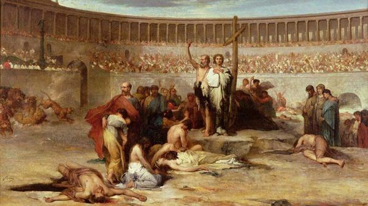Згодом періоди гонінь на християн змінювалися періодами відносного спокою, деякі римські імператори ставилися до християн цілком прихильно. Наприклад, імператор Олександр Север симпатизував християнам, і деякі історики навіть підозрюють, що він був таємним християнином, правда в часи його правління Римська імперія ще не була готова стати християнською.
Останнє велике гоніння на християн у римській державі відбулося в епоху правління імператора Діоклетіана, причому що цікаво – в перші роки свого правління він ставився до християн цілком терпимо, більш того, навіть деякі близькі родичі самого імператора прийняли християнство і священики вже подумували про навернення в християнство і самого імператора. Але раптом імператора ніби підмінили, і у християнах він побачив своїх найлютіших ворогів. По всій імперії християн пропонувалося переслідувати, через тортури примушувати до зречення, у разі відмови вбивати. Що послужило причиною такої різкої зміни і настільки раптової ненависті імператора до християн, на жаль, не відомо. Найтемніша ніч перед світанком, так стало і з християнами, найжорсткіше гоніння імператора Діоклетіана стало також і останнім, згодом запанував на троні імператор Костянтин, який не тільки скасував всі гоніння на християн, але і зробив християнство новою державною релігією Римської імперії.